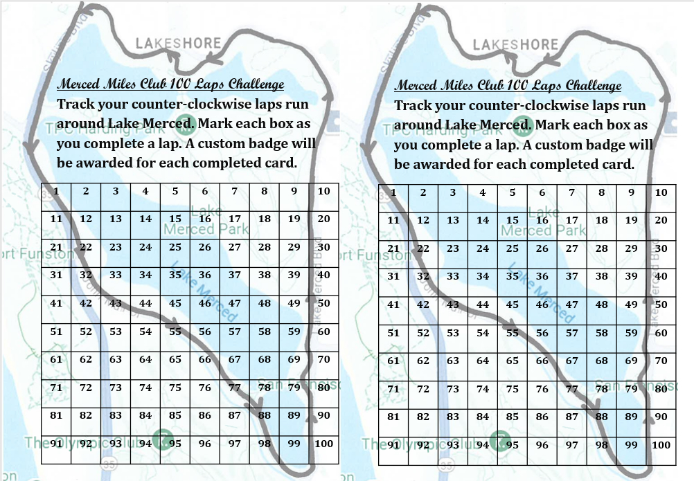

Merced Miles Club is centered around running around Lake Merced in San Francisco in the counter-clockwise direction.
The club does not organize scheduled runs or events. Participation is informal and generally individual.
Anyone may consider themselves part of the club.
The Loop
Lake Merced is approximately 4 miles around. A single lap consists of one counter-clockwise loop.
Each completed loop counts as one lap.
The 100 Laps Challenge
The 100 Laps Challenge is an optional long-term challenge associated with the club.
Completing 100 counter-clockwise laps around Lake Merced is roughly equivalent to running 400 miles over time.
The challenge may be completed at any pace and over any length of time.
Progress may be tracked using a 100 Laps Challenge Card.
The Card
The 100 Laps Challenge Card is a paper tracking card with space to record completed laps.
A printable version is available. A physical version may also be purchased.
The physical card is printed on heavy cardstock and is intended to hold up over extended use.
Purchasing a card is optional and does not affect participation. The physical card may be purchased here.